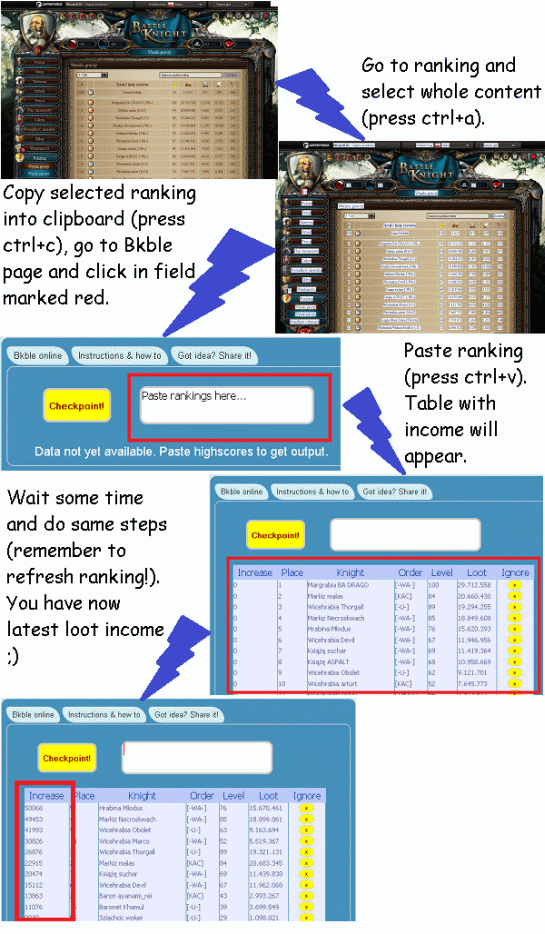

Data not yet available. Paste highscores to get output.
How to use this tool:
Basically idea is to copy each ranking from browser and paste it into field next to "checkpoint" button.
Procedure is as follows:
1) Go to Battleknight ranking, copy whole text (ctrl+a, after all selected copy it with ctrl+c),
2) Go to Bkble Online, click field next to button "checkpoint" and hit paste (ctrl+v). In bottom text area will be shown list with each line starting from 0, 3) After few minutes refresh ranking in Battleknight and do point 1 and 2 again. If there were loot change on start of knight line at bottom text of Bkble Online area will be something different than zero. It means that between first and second ranking check were loot change. Try to attack that knight, you will have bigger chance that knight will have something on account now ;)
Checkpoint button can be used whenever you want. It will make last loots as ones with which comparison will be done. To make it clear let assume you are using Bkble Online for 1 hour and there are lots of changes. It is not obvious which loot has changed lately. Hit "checkpoint" button and comparison will be done from last ranking check.
There is no connection between Bkble Online and Battleknight. It do not violate game rules. Basically using Bkble Online is same as using pen and paper or Excel to count differences. It is more quick thought and more simple I hope ;) Feel free to use it how much you want.
To reset state just reload this page.
Tested on Firefox and Chrome.
Procedura użycia w "pigułce":
1) Wejść na stronę rankingu, nacisnąć ctrl+a (lub z menu "zaznacz wszystko") i skopiować tekst do schowka naciskając ctrl+c (lub z menu "kopiuj"). Uwaga: w przeciwieństwie do "starego" Bkble nie trzeba kopiować i wklejać źródła strony, wystarczy tekst na stronie rankingu.
2) Przejść na stronę Bkble Online i w pole tekstowe na górze po prawej wkleić informacje ze schowka używając ctrl+v (lub "wklej" z menu).
3) Powtórzyć 1) i 2) po odczekaniu jakiegoś czasu (np. 5 minut) uprzednio odświeżając stronę rankingu.
4) Powtórzyć 1), 2) i 3) z iloma rankingami się chce i ile razy się chce ;)
Tajemniczy przycisk "Checkpoint" służy do zresetowania przyrostów, przycisk "x" przy każdej linii służy do ignorowania rycerza.
Jeżeli chcecie zresetować całkowicie Bkble Online wejdźcie na stronę ponownie uprzednio ją zamykając bądź kliknijcie w pole adresu przeglądarki i naciśnijcie enter.
W razie dalszych niejasności możecie spojrzeć na interaktywny samouczek w sekcji angielskiej, bądź napisać do mnie - postaram się pomóc.
Testowane na Chrome i Firefox.
Wysokich łupów :D